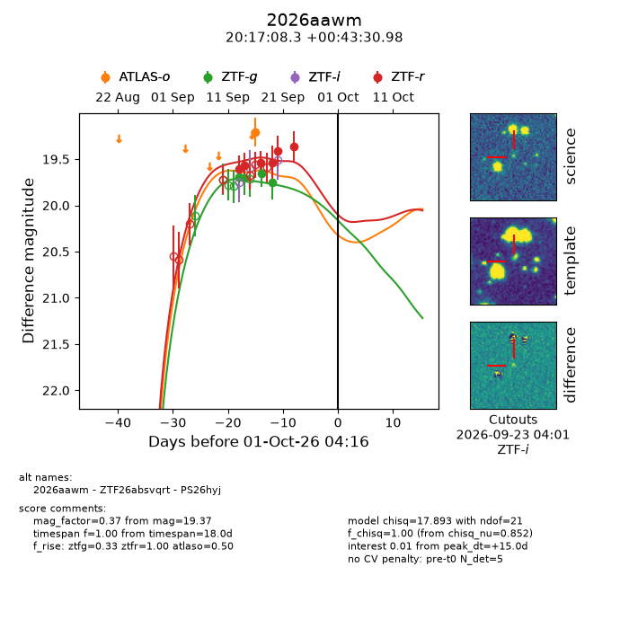
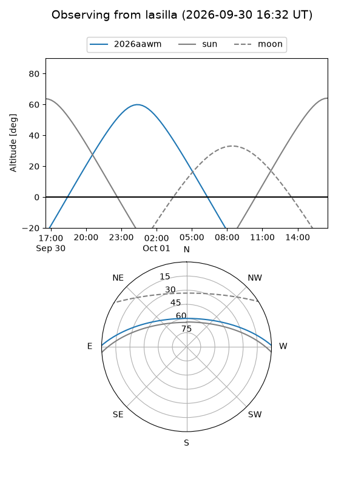
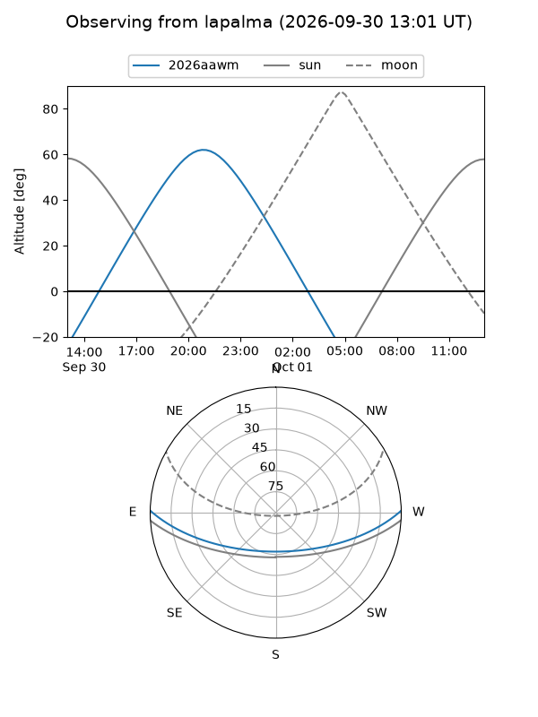
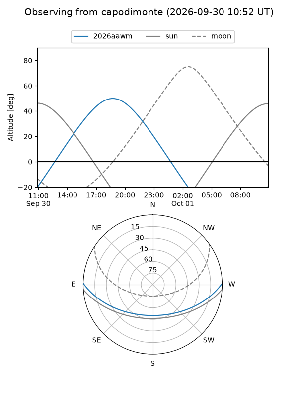
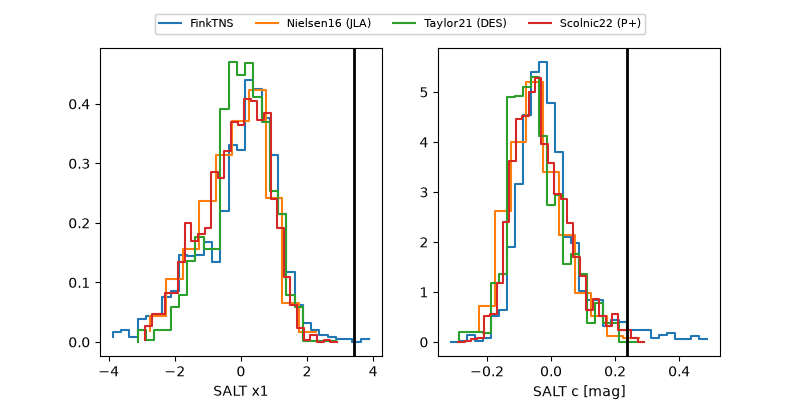

2026aawm
Target 2026aawm at 2026-10-01 04:18
Aliases and brokers:
FINK-ZTF: ztf.fink-portal.org/ZTF26absvqrt
Lasair-ZTF: lasair-ztf.lsst.ac.uk/objects/ZTF26absvqrt
ALeRCE-ZTF: alerce.online/object/ZTF26absvqrt
YSE-PZ: ziggy.ucolick.org/yse/transient_detail/2026aawm
TNS name: wis-tns.org/object/2026aawm
Direct TNS query: direct search
alt names
ZTF26absvqrt (ztf,fink_ztf)
2026aawm (tns,yse)
PS26hyj (panstarrs)
Coordinates:
equatorial (ra, dec) = 304.2845,+0.72527
equatorial (HMS+DMS) = 20:17:08.29,+00:43:30.98
galactic (l, b) = (43.7469,-18.62061)
Flags:
TNS type: nan
peak dt: +15.0
Photometry:
last atlaso=19.20, ztfg=19.75, ztfr=19.37
1 atlaso, 4 ztfg, 6 ztfr detections
Lightcurve

Visibility



Additional plots
